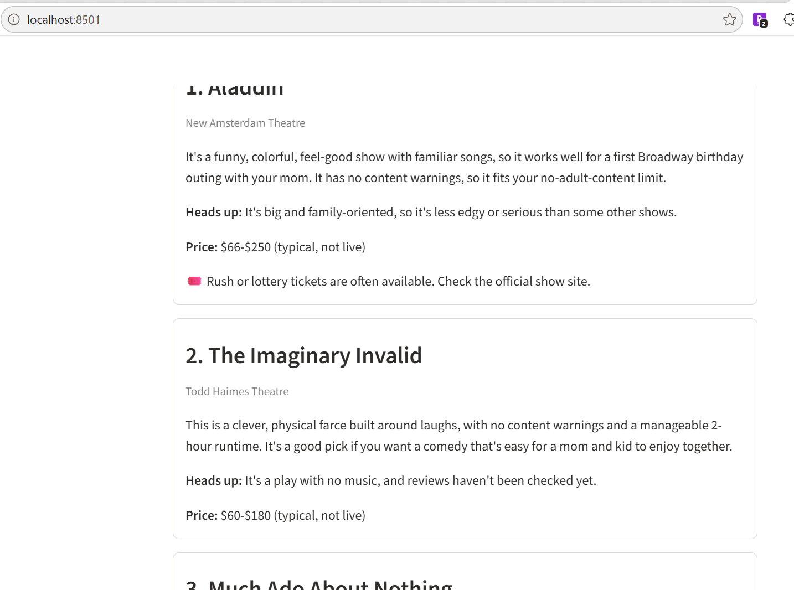
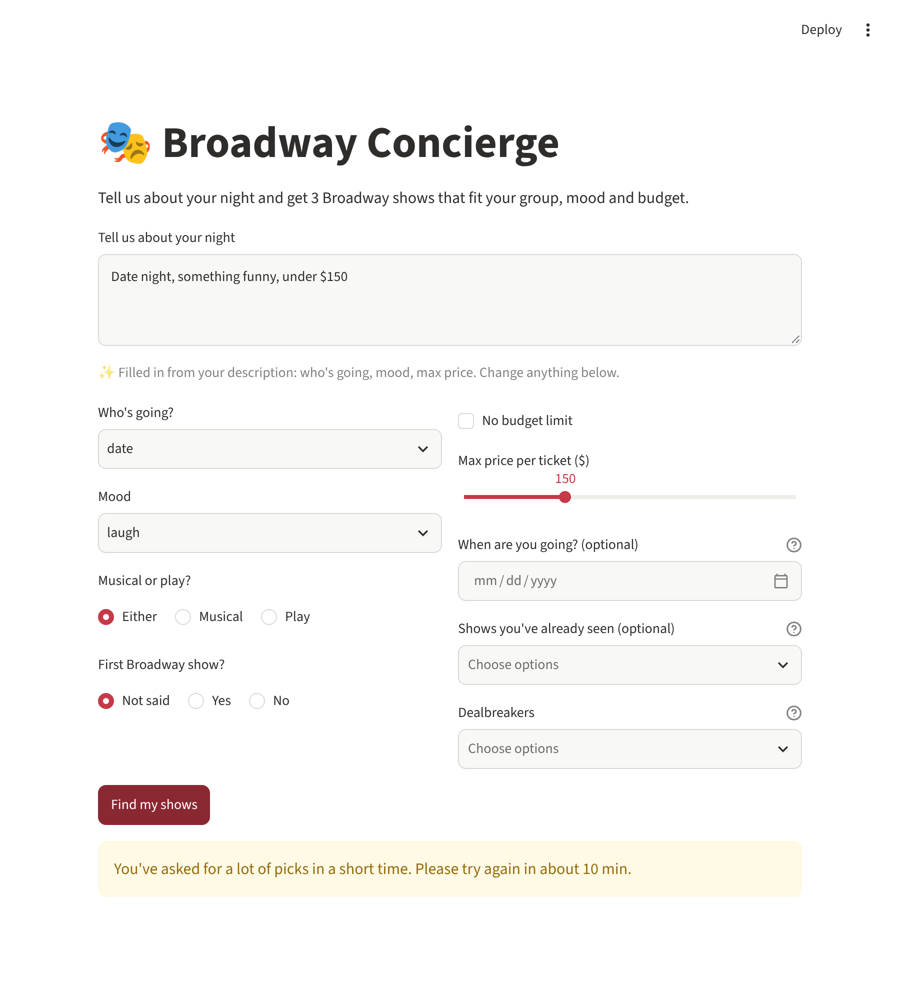

Broadway Concierge
Broadway Concierge helps new and experienced theatergoers find the right show for their group, matched to their taste, budget and schedule, and flags ticket scams before they pay.
Product Showcase (Prototype / Live App / 2-Min Video)
Current Status: Build 3 shipped (updated Nov 21): the live web app (no account or API key) and the local Streamlit app, which now returns picks from Claude with my own key. New this week: an optional date and time-of-day filter, a link to each show's official site, marking shows you've seen, swapping out a single pick, and a weekly automatic catalog update. PostHog runs on both apps and this page.
Demo: Screenshot of the current web version after choosing the "Date night, $150 max" example. The four required questions (who, mood, musical or play, price) are filled in from the description and marked "From your description"; the result is three picks with a cover, status, price, runtime, ages, why it fits, a heads-up, a "Get tickets on the official site" button, an "I've seen it" button, and an × in the corner to swap just that pick. The optional "When are you going?" question is below price.
Try it: web version of the show recommender (37 shows running or in previews; catalog updated Nov 27, 2026). Pick an example or describe your night, check the four answers it fills in, and the picks update as you go.

Living PRD (Product Requirements Document)
1. Target User & The Job to Be Done
Who is this for? Anne, a knowledgeable, engaged theatergoer who sees shows regularly but has limited money, time and planning bandwidth. Anne cares more about finding the right show than the most popular one: something with strong writing, a memorable score and an emotional payoff. Anne already puts in the effort, reading reviews, playing cast recordings and entering lotteries, but that research is scattered across many apps and sites. Anne often chooses for a partner, friend or family member too.
What Anne needs from it: a recommender that knows Anne's taste, respects budget and schedule, flags deals and closing dates, and points to shows Anne would love but would otherwise miss.
The painful "Before" workflow: Choosing a show: People piece it together from reviews, Reddit, YouTube, and friends. No single source accounts for their group, budget, and taste, so they cross-check several tabs. General chatbots can also suggest shows that have already closed. Buying tickets: Official sellers are safe but can be pricey or sold out. So budget buyers turn to Facebook groups and forums, where nothing is verified. They check listings by instinct (seller profile, screenshots, “does this row exist?”), and scammers push payment methods with no protection, like Zelle, gift cards, and crypto. Once the money is sent, it’s gone. The gap: Recommendations ignore ticket-buying reality, and resale groups give no help judging a listing.
The "After" workflow with this product: Describe the night. The user types something like “Taking my mom, we loved Wicked, hate jukebox musicals, $150 max,” or taps an example, and checks the answers it fills in (here: Family, Laugh, $150, no jukebox). Get 3 picks. The tool returns three shows from the catalog, each with why it fits, one honest caution, and a typical price range. Find tickets. The user picks a show and checks official sources or resale groups. Paste any resale listing. If they find a cheap one, they paste it into the checker. Get a verdict. The tool returns a risk rating (low, medium, or high) and the specific red flags, such as “Zelle only,” “price far below face value,” or “Row ZZ doesn’t exist at this theater.” Decide. They buy with confidence, walk away from the scam, or switch to an official seller.
2. Scope & Explicit Non-Goals
- In Scope (Core Workflow): Describe your night, or start from an example, and get 3 shows that fit. Four answers are required: who is going (solo, date, friends, family of adults, or taking kids with the youngest age), mood, musical or play, and the most you will pay per ticket. The app fills these in from the description, and the person can change any of them. Optional: when they are going (Tonight, Tomorrow, Any date or a picked date, then matinee or evening), first time on Broadway, and rule-outs (no jukebox musicals, no crude or sexual content, no adult themes, under 2h15, not too loud, no intermission). Each pick shows why it fits, one honest caution, the theater, runtime, ages, a typical price range, the times on the chosen day, and a link to the show's official site to buy tickets. If a pick isn't right, the × in its corner swaps just that one for the next-best show (the other two stay put, with Undo). Shows the person has already seen, ticked from a checklist or marked "I've seen it" on a pick, are never suggested and are remembered on that device. The tool picks only from a hand-built catalog of shows that are running or about to open. Hard limits (price, kids' age, show type, rule-outs, and the chosen date: still running and playing that day) are applied in code before anything is ranked, so a pick can never break them; if fewer than three shows fit, the closest near-misses are labeled with what they break. Secondary feature (built in the command-line prototype, not yet in the web app): paste a resale listing and get a low, medium, or high risk rating with the specific red flags. This is the "before you pay" safety check once they've picked a show.
- Out of Scope #1: Live prices or seat inventory (prices are typical ranges and are labeled that way)
- Out of Scope #2: Scraping Facebook or forums
- Out of Scope #3: Buying tickets or messaging sellers
3. How It Works Under the Hood & Riskiest Assumption (Week 2+)
Riskiest Assumption: Broadway Concierge takes a user’s request, loads a hand-built catalog of running shows, and sends both to the Claude API, which picks three fits with a reason, a caution, and a typical price. The same pattern powers the secondary resale checker, which compares a pasted listing against a red-flag checklist and theater seating info. There’s no database and no live data, so the riskiest assumption is that the catalog is accurate and current enough to trust. Closed shows, stale prices, or wrong content warnings would sink user confidence, so verify every show and test with a few sample requests.
What Week 2 showed: The risk was real. The Build 1 catalog, written from memory, covered only 8 of the 33 shows now on Broadway, and several current shows close within weeks. The catalog was rebuilt on Nov 13 against Broadway Direct's what's-on guide, with a date on every entry and closing notes where known. Ages, content notes and the high end of each price range are still my estimates and are labeled as estimates on every card. Keeping the catalog current is now a weekly task, not a one-time setup.
Simple Architecture: Typed request + form answers (who, mood, musical or play, budget, dealbreakers) → Streamlit app in Python, which drops any show in data/shows.json that breaks the budget, kids' ages, show type or dealbreakers → Claude API ranks the shows that are left → three picks, checked against the catalog so theater, price and rush info always come from the catalog, not the AI. A browser version of the same rules lives at app/. There, the person can start from an example or describe the night in words, and the four required questions are filled in from that text; anything they pick themselves is never overwritten. The Streamlit app reads descriptions with the same rules. Both apps send anonymous usage events to PostHog: answers chosen, picks shown and buttons used, never the text a person types. The web pages also record session replays (see section 5), with every form field masked. Shows the person has seen or swapped out are removed before ranking, in both apps. Each catalog entry also holds the show's official site, its weekly performance times (a regular week, from BroadwayWorld's weekly grid) and its announced closing date. Every Monday at 6:58 AM a scheduled Claude task checks Broadway Direct, TDF, IBDB and BroadwayWorld, removes closed shows, adds new ones (including previews), refreshes times, closing dates and the show counts, runs the tests, and publishes the update only if they pass.
4. Unit Economics & Analytics Snapshot (Updated Weekly)
5. Hosting, Data & Security (PRD v3)
Hosting choice: GitHub Pages for everything public; the Claude app stays on my laptop.
- Live site: the product page and the web app are plain HTML and JavaScript, so GitHub Pages serves them free from the
docs/folder onmain. There is no server to run, patch or pay for, and no key in the browser, because the web app ranks shows with rules in the visitor's browser instead of calling Claude. - Claude app: the Streamlit app calls the Claude API with my key, so it is not deployed. A public copy would let anyone spend my credits. If I deploy it later, it goes on Streamlit Community Cloud with the key in its Secrets settings, behind the rate limit and spend cap below.
- How changes ship: every change is a pull request that I approve; merging to
mainpublishes the site in 1-2 minutes. GitHub branch protection blocks direct and force pushes tomain(tested: a direct push was rejected). Rolling back means reverting the pull request. The only automatic change is the Monday catalog update, which also goes through a pull request and merges only if the tests pass.
Database choice: none, on purpose. There are no accounts and no sign-in, so there is no personal data to store or protect. Everything the product keeps lives in one of three places:
- The show catalog (
data/shows.json) is a file in the repo, versioned in git, so every past version can be restored. - The "shows I've seen" list stays in each visitor's own browser (
localStorage). It never reaches me, and clearing the browser clears it. - Usage analytics go to PostHog (US cloud): anonymous events and, on the web pages, session replays kept for 30 days. Form fields are masked in replays, typed text is never sent as an event, and PostHog drops visitors' IP addresses ("anonymize IPs" turned on Nov 21). The page uses PostHog's public key, which can only add events: I tested it from the browser console, and reading, querying and deleting with it were all rejected.
If the product ever needs saved accounts or shared data, that means adding a server and a database behind sign-in, with writes going through the server's secret key, not the browser.
Security choices (full review in SECURITY.md, 13 checks):
- Keys: the Claude key lives only in
.envon my laptop. A search of the live site, the repo and all of its history found no secret keys. GitHub secret scanning and push protection now block any key that gets committed. - Spending: a hard $10/month cap on my Claude Console account, plus a rate limit in the Streamlit app (10 requests per visitor per 10 minutes, 60 per hour for everyone). In the test, 30 clicks in a row let 10 through and blocked 20.
- The live pages: a Content Security Policy lets each page run only its own scripts (by exact fingerprint), PostHog's scripts and Google Fonts, and send data only to PostHog. In testing it blocked an injected script, a script from another site, a hidden
onerrorhandler and a request to an outside server, while PostHog analytics and session replay kept working. - Dependencies:
pip-auditfound that older allowed versions had 77 known vulnerabilities. The minimum versions were raised until none remained, and Dependabot now opens fix PRs. - My coding agent: AGENTS.md has an "Ask Me First" list (deleting data, keys and permissions, anything that costs money, merging to production), enforced in Claude Code's settings, plus rules learned from real mistakes.
- Accepted risks: anyone can send fake analytics events with the public key, and the policy has to trust PostHog's whole script server.
Weekly Build Log
Build 1 · Intent.md & Throwaway Prototype (Due Nov 9)
- What shipped: PRD v1 and this Product Page on GitHub Pages. A local prototype: a Streamlit show recommender (
streamlit_app.py) and a command-line version (app.py) with a hand-built catalog of 8 shows. Code removes shows that break the budget, kids' ages or dealbreakers, Claude picks from what is left, and code checks the answer. Also an 8-listing ticket scam checker and an offline test suite that needs no API key. - Things learned with AI: The Terminal lets you control your computer by typing commands instead of clicking. Git tracks changes to your project and saves snapshots called commits. GitHub stores your project online so you can share and collaborate with others.
- What broke / changed in PRD: Running the live test without an API key ended in a Python traceback, so the test now prints a plain message telling you to add the key to
.env. Every catalog entry was written from memory and marked TODO, so nobody could say yet whether a show was still running or the prices were right. - Cost & time this week: $21.78 · 4 hours
- Live run (added Nov 20): The local Streamlit prototype running at
localhost:8501with my own Claude API key, returning picks from Claude: Aladdin, The Imaginary Invalid and Much Ado About Nothing, each with why it fits, a heads-up and a typical price.

Build 2 · Smallest Local Version & PostHog (Due Nov 16)
- What shipped (Nov 13 and Nov 14, pull requests #1 to #11):
- Catalog: grew from 8 shows written from memory to 33 shows running or opening now (34 when checked against Broadway Direct's what's-on guide on Nov 13; School Girls closed Nov 15 and was removed), with closing notes (for example, Maybe Happy Ending tickets on sale only through Nov 22).
- Live web app at app/: the same hard rules as the Python app, running in the browser with no API key. A red and gold theatre-marquee design, an original cover illustration for every show, and live picks that update as answers change.
- Form: four required answers (who is going, mood, musical or play, price per ticket with preset limits or an exact slider), optional first-timer and rule-outs. "Who is going?" separates Family (adults only) from Taking kids (asks for the youngest age, which becomes a hard age limit).
- Quick start: four examples, or "Or, describe your night." The app reads the text and fills in the answers it can, marked "From your description." Anything chosen by hand is never overwritten. The Streamlit app does the same.
- Results: three picks with why each fits, a heads-up, theater, runtime, ages and typical price; a count of how many shows fit and what was ruled out; "Show me different picks," "Copy my picks" and "Start over."
- PostHog: installed on this page, the web app and the Streamlit app, and verified in PostHog on Nov 13 (see the analytics box above).
- Tests: 36 offline checks for the web logic (
node web/test_core.js) and 8 for the Python app (python test_recommender.py), all passing. 18 sample descriptions are shared by both, so the web and Python versions read text the same way. Run and test commands are inAGENTS.mdand the README.
- Things learned with AI: Working in pull requests: each change goes on its own branch, gets reviewed as one pull request, and is merged when it is right, which made 11 changes in two days easy to follow and undo. GitHub Pages republishes the site a minute or two after a merge (Ctrl+F5 loads the new version). A PostHog project token is meant to be public, but a personal API key must never be in code; real keys stay in a local
.envfile that git ignores. Running a Python app on Windows needs a virtual environment and a few PowerShell commands, now written up in the README. - What broke / changed in PRD:
- The riskiest assumption was real: the old catalog covered 8 of 33 current shows, and some shows close within weeks. Entries now carry a check date and closing notes, and ages, content notes and most prices are labeled as estimates on the page.
- The text reader treated "I hate jukebox musicals, and we want to laugh" as a dislike of comedy, because "hate" reached across the comma. Found by running the example request in a browser; fixed by ending a dislike at a comma or "but", with a test.
- A night out with kids and no ages entered could return a show meant for ages 13 and up. Now picks lean toward school-age shows and say so, and setting the youngest age applies a hard limit. On Nov 14 "Family" became adults only, and "Taking kids" became its own answer.
- Filling the form from a description first missed ordinary wording ("budget 200", "my sister", "something sad", "2 kids (8 and 12)"), and the Streamlit app did not fill anything. Both now share one set of patterns and 18 test descriptions. It is still keyword matching, not AI: wording it does not know stays blank and stays required.
- Feedback from testing the form changed it: a fourth required question (Musical, Play or Either), a "No adult themes" rule-out, "Under 2h45" tightened to "Under 2h15" (rules out 20 of 33 shows instead of 3), and "Been to Broadway before?" allows both answers for a mixed group.
- "No adult themes" is judged from the catalog's content notes, which are my estimates. It rules out 17 of 33 shows, including The Lion King (a parent's death), so it is strict on purpose.
- PostHog's bot filter dropped events sent from automated browser tests, so analytics could only be confirmed by a real visit to the live pages.
- Named the target user: Anne, a knowledgeable regular theatergoer. The pitch now matches. Anne also wants taste memory, schedule and deal alerts, which the product does not do yet; closing-date notes are the only part built.
- Cost per Claude request in the Python app went up about 2.3 times, from roughly $0.009 to $0.02, because it sends every eligible show to Claude. The web app needs no API calls.
- Still open: run the Streamlit app with my own Claude API key, screenshot the picks it returns and confirm its PostHog events; confirm Anne can test the app and how to reach her; the resale-listing checker is not in the web app yet.
- Cost & time this week: $0 incremental · 4 hours. Build 2 used the same Claude subscription already counted in Build 1 ($21.78). No Claude API runtime yet (the web app needs no key and the Streamlit app has not been run with my key), PostHog free tier, GitHub Pages free. Running the Streamlit app with my API key will add about $0.02 per request.
Build 3 · Build.exe: The Core Workflow (Due Nov 23)
- What shipped (Nov 20 to 21, pull requests #13 to #28):
- Live run with my own key: the local Streamlit app now returns picks from Claude (screenshot added to the Build 1 entry), and its PostHog events arrive.
- Official site on every pick: each show links to its own official website, checked against its TDF listing or its own site (two supplied by me). The link is a full button at the end of the card, "Get tickets on the official site", placed after "Why it fits" and "Heads up", where the person has decided and is ready to act.
- Optional date filter: "When are you going?" with Tonight, Tomorrow, Any date or a picked date, then an optional Matinee / Evening. Only shows still running and playing that day are picked, each pick shows that day's times, and a hint says how many shows play that day (most are dark on Mondays). Typing "Saturday matinee" or "Dec 5" fills it in.
- Catalog kept current automatically: a scheduled task runs every Monday to remove closed shows, add new ones and previews, refresh weekly times and closing dates and update the counts, and publishes only when the tests pass. I get a phone notification with what changed.
- Swap one pick: an × in the top-right of each card replaces only that pick with the next-best show. The other two stay in place, the new one is highlighted, and "Undo" brings the old one back. Swapped shows stay hidden until "Start over".
- Shows you've already seen: an "I've seen it" button on each pick, plus a checklist of every running show (with a filter box) to tick several at once. Seen shows are never suggested, are remembered on that device, and show as removable tags. The Streamlit app has the same list.
- Security, hosting and privacy review (Nov 21, #20 to #28): 13 checks, written up in
SECURITY.mdand in PRD section 5.- Keys and data: no secret keys in the live site, the repo or any of its history. The public PostHog key can add events but was rejected when I tried to read, query or delete with it. There is no database and no file storage.
- Spending: a $10/month cap on my Claude Console account, and a rate limit in the Streamlit app (10 requests per visitor per 10 minutes, 60 per hour for everyone). Clicking "Find my shows" 30 times let 10 through and blocked 20.
- The live pages: a Content Security Policy now lets each page run only its own scripts, PostHog and Google Fonts. It blocked an injected script, a script from another site, a hidden
onerrorhandler and a request to an outside server. - GitHub:
mainis protected (a direct push was rejected), and secret scanning, push protection and Dependabot are on. Package minimums were raised afterpip-auditfound older allowed versions had 77 known vulnerabilities. - Visitor privacy: session replay keeps working under the new policy, every form field is masked in replays, and PostHog now drops visitors' IP addresses.
- My coding agent: AGENTS.md has a Shipping checklist, an "Ask Me First" list (deleting data, keys and permissions, anything that costs money, merging) enforced in Claude Code's settings, and seven rules from real mistakes.
- Tests: 42 offline checks for the web logic (including the security policy and replay masking) and 11 for the Python app, plus a 30-click rate-limit test of the Streamlit app with a fake Claude, all passing, including shared date and description cases so both apps behave the same.
- What broke / changed in PRD:
- The first live Streamlit run crashed on every request ("'ThinkingBlock' object has no attribute 'text'"): the current Claude model can send a thinking block before the answer, and the app read only the first block. Fixed in #13 by reading every text block.
- The catalog went stale within a week: School Girls closed Nov 15 but could still be recommended, and Maybe Happy Ending's note still says tickets run only through Nov 22 while Broadway Direct now lists a longer run. School Girls is removed (33 shows), and these checks are now the weekly task's job instead of mine.
- I could not find a show website for two shows (Other Desert Cities, Paranormal Activity), so I supplied them myself after reviewing every link.
- Performance times are one regular week, not live. Holiday weeks (Thanksgiving, Dec 21 to Jan 3) get a warning to check times, and "Tonight" does not yet hide shows whose curtain has already gone up.
- Testing the new card buttons found two problems before release: on phones the official-site and "I've seen it" buttons were squeezed into a narrow column, and after a swap the card numbers no longer read 1-2-3. Both were fixed (full-width buttons on phones; numbers follow position on screen).
- The first "seen" field only let you add one show at a time by typing its name. After trying it, I changed it to a checklist so a regular like Anne can tick everything she has seen in one go.
- Scope grew from "who, mood, price" to "when" as well, because a show that is dark or closed on the night someone can go is not a real recommendation.
- The security review found real gaps, not just confirmations: the Streamlit app had no rate limit,
requirements.txtstill allowed package versions with 77 known vulnerabilities,maincould be pushed to directly, GitHub's key scanning was off, the pages had no security policy, replay masking depended on a PostHog default, and PostHog was storing visitors' IP addresses. All of these are now fixed. - The first 30-click rate-limit test let every request through. The test tool gave each click a different fake IP, so every click looked like a new visitor. The app now trusts an IP only when it is a real address.
- The security policy blocks inline click and submit handlers, so the two the pages had were moved into scripts. The build now refreshes the policy automatically, and a test fails if a page's script changes without a rebuild.
- One test expectation was wrong for this kind of app: "inserting a row with the public key should be rejected." PostHog's public key is meant to accept new events; the real protection is that it cannot read, change or delete anything, which is what I verified.
- Things learned with AI: Security depends on what kind of app you have. Mine has no sign-in and no database, so the real risks were spending (a public Claude route), secret keys and the coding agent itself, not stolen user data. A test is only useful if it actually exercises what it claims to, so check a surprising pass before trusting it. Setting a rule in code (like replay masking) is safer than relying on a service's default. Turning my agent's mistakes into written rules in AGENTS.md keeps them from happening twice.
- Security check (submission):
- Repo: github.com/building-with-ai-f26/cb5646-broadway-recommender
- Lane: Beginner
- Security write-up: SECURITY.md (app type, 13 checks, fixes and remaining issues)
- Test result: my app is "AI with no database", so the fitting test is the rate limit on the route that calls Claude. In the real Streamlit app, clicking "Find my shows" 11 times in a row gave picks for clicks 1 to 10, and click 11 was blocked with "Please try again in about 10 min." (Streamlit's equivalent of a
429; Claude was never called). Claude was replaced by a fake for this run, so it cost nothing. The automated version (python tests/test_rate_limit_streamlit.py) clicks 30 times: 10 allowed, 20 blocked.
- Cost & time this week: $6 · 5 hours. The $6 is Claude API spend this week (my own key, used by the local Streamlit app). The Nov 21 security and hosting work added an hour and $0: every rate-limit test used a fake Claude, GitHub secret scanning, push protection and Dependabot are free for public repos, and building still ran on the same Claude subscription. PostHog free tier; GitHub Pages free. Cumulative spend stays $27.78, now with a $10/month cap on future Claude API spend.
Build 4 · Test.py: Choose Track A or Track B (Due Nov 30)
- Chosen track: Not chosen yet.
- Results and improvements: Not started.
- PRD v4 changes: Not started.
- Cost & time this week: Not started.
Build 5 · Ship.installer: Launch Ops, Rollback Check & 2-Min Video (Due Dec 7)
- Launch Ops & Safety: Not started.
- 2-Minute Video & Final Polish: Not started.
- Cost & time this week: Not started.